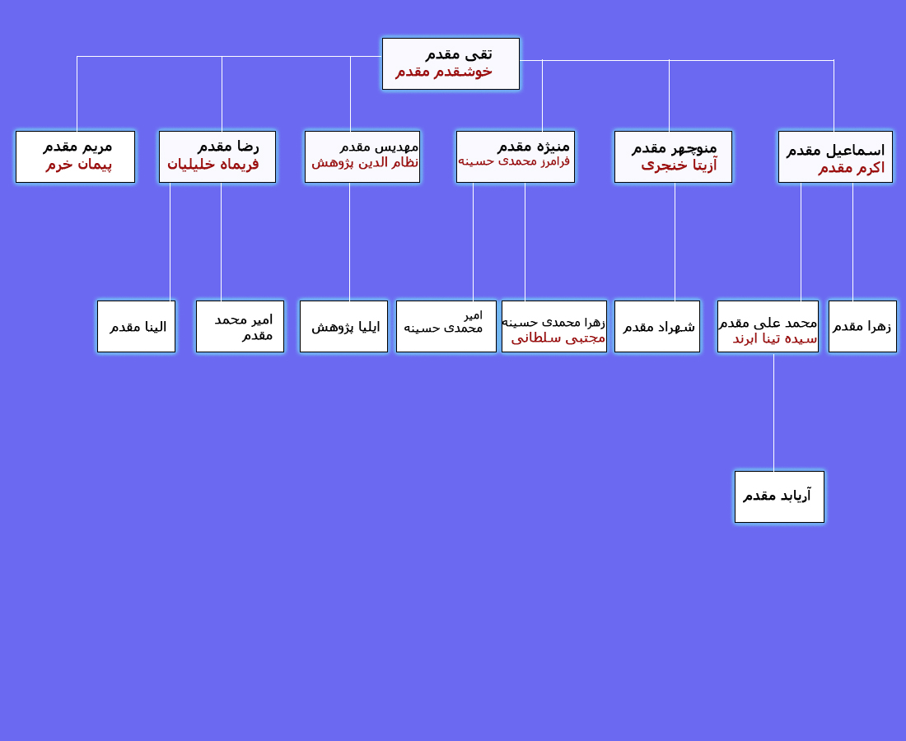

نحوه درخواست شجره نامه :
شما در ابتدا شجره نامه خود را مانند این لینک یا به صورت کامپیوتری و یا به صورت دستی روی کاغذ رسم کنید و مشخصات را یادداشت کرده و به شماره09120649505 ارسال نمایید بعد از آماده شدن فایل وب سایت با شما در مورد مشخصات و عکس ها تماس گرفته می شود حدود آماده شدن صفحه وب شجره نامه شما 72 ساعت می باشد
نمونه رسم شجره نامه
